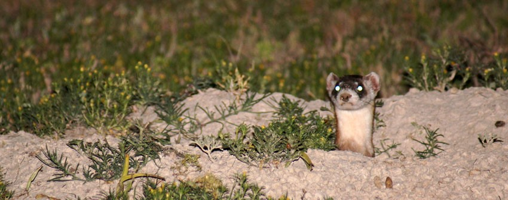
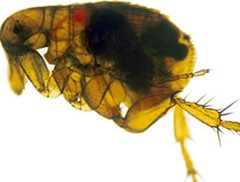
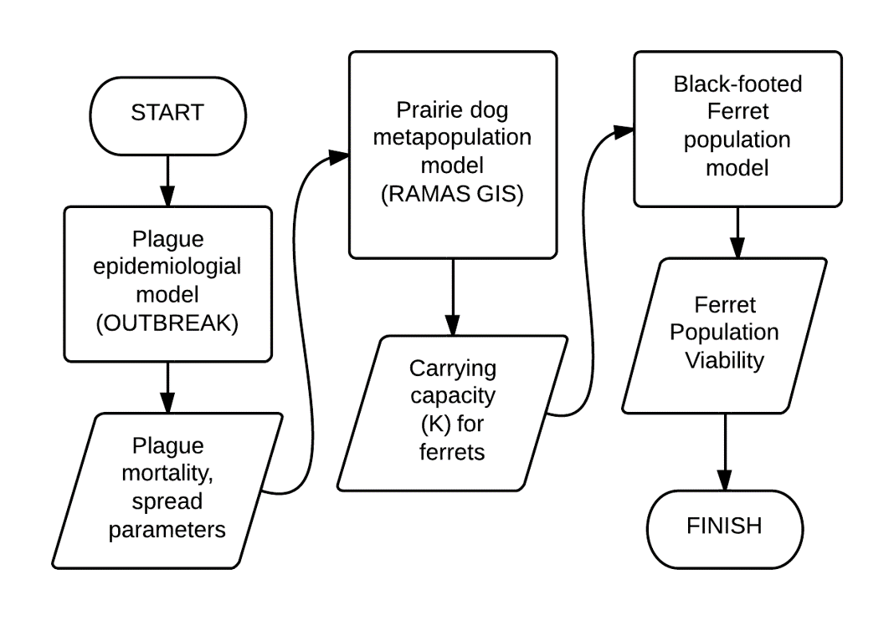
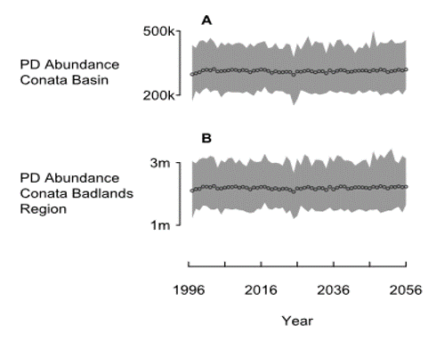
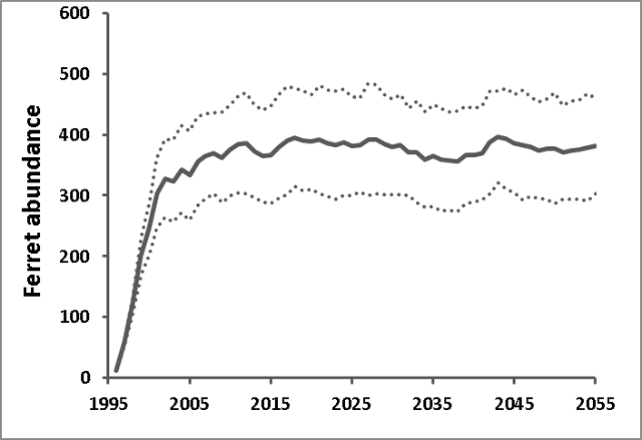
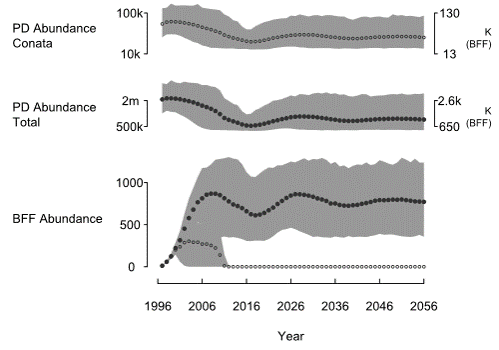
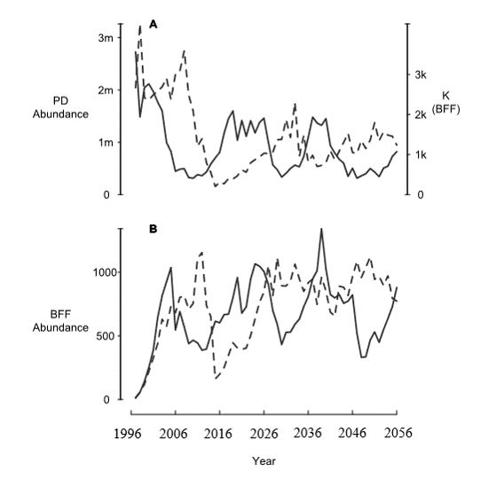
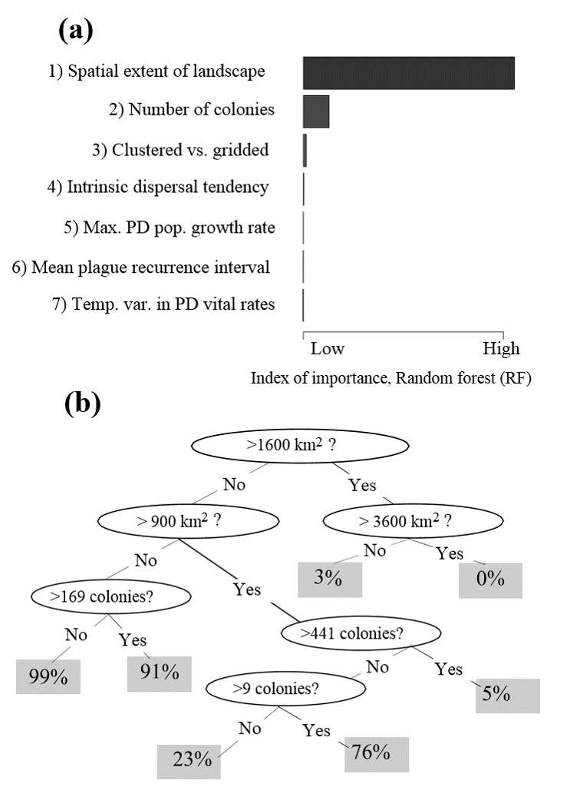
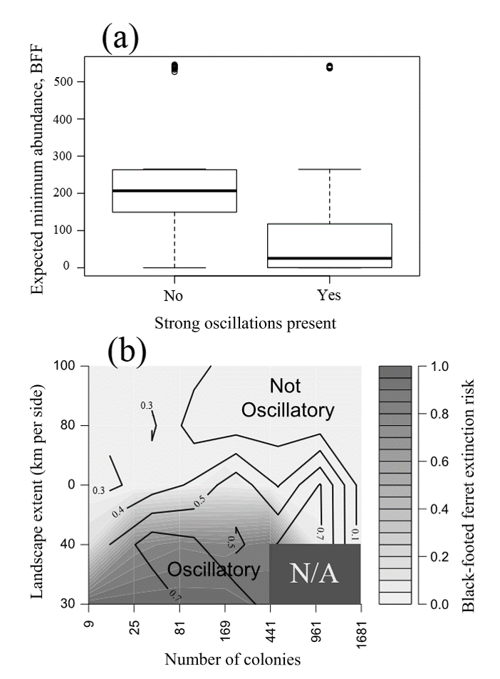

Example: parameterizing a PVA model
NRES 470/670
Spring 2020
PVA case study- Modeling the recovery of the black-footed ferret in a linked predator-prey-disease system
Figure 1: prairie dog and black-footed ferret range
An obligate predator
- Approximately 90% of the diet of black-footed ferret consists of prairie dogs (obligate predator).
- Ferrets give birth in prairie dog burrows.
- The historic range of the black-footed ferret coincides with the three prairie dog species that constitute its prey.
- You can’t know what’s going on with BFF populations without knowing what’s going on with prairie dogs

Ferret facts!
- Extinct in the wild by 1987
- In 1987, last 18 individuals were removed for captive breeding
- Over 3,500 released into the wild at 19 locations in US, Mexico and Canada (Livieri 2011)
- Four reintroduction sites considered self-sustaining
Study site: Conata Basin
- As part of black-footed ferret reintroduction efforts, 150 captive-born ferret kits were released over a 4-year period to prairie dog colonies in Conata Basin beginning in 1996.
Conata basin
- This effort resulted in a self-sustaining population with a total of approximately 200 animals by 2000 (Livieri 2006).
- Plague-free, rapid establishment of ferrets, among the most successful ferret reintroduction sites.
- Declined dramatically since sylvatic plague was detected in 2008, falling from 335 individuals documented in 2007 to only 71 in 2012 (Livieri 2012).
- Plague mitigation efforts have been implemented, including
- dusting of prairie dog burrows (insecticide treatment)
- experimental vaccination of black-footed ferrets (Abbott and Rocke 2012).
Prairie dogs in Conata Basin and surrounding region
Spatial structure of study region

Figure 2: study region

Sylvatic plague
- Exotic flea borne disease
- Highly fatal to prairie dogs (and ferrets)
- Continued eastward expansion of plague threatens to undermine ferret recovery efforts
- Plague was first observed at our study site (Conata Basin) in 2008
A “metamodel”!
- PVA is typically focused on a single species.
- Species interactions are not typically included explicitly!

Prairie dog submodel
- Metapopulation of 1591 colonies
- Wide range of abundance, connectivity among colonies
- RAMAS GIS
This is what the prairie dog model looks like in the absence of plague. Robust population with essentially no risk of prairie dog extinction.

Ferret submodel
In the absence of plague…

The linked predator-prey-disease model…

- The prairie dog population declines and settles at a new lower equilibrium.
- The minimum abundance of Pdogs is around 12k for the Conata Basin, which really is insufficient for supporting ferrets.
- The ferret population quickly goes extinct if they can only access those Pdog colonies in the Conata Basin area.
- However, the reintroduced Ferret population in Conata is likely to be sustainable (given the presence of Plague) if the ferrets can access prey outside the region currently managed for ferrets (Conata basin).
An emergent property!

BFF population and PD populations are now cycling due to PD plague dynamics!
Link to video of simulation results



Conclusions
- Ferrets may require vast prairie landscapes to persist through plague epizootics
- Observed rates of plague spread (or synchronicity of plague outbreaks) may be used to define the spatial scale at which ferrets are likely to persist.
Detailed parameterization: a metapopulation model of prairie dogs and black-footed ferrets!
Here I will take you through a detailed parameterization of the prairie dog and ferret models (see the paper here).
This model is more complex than the models you will be doing for your final project, but hopefully it serves as a useful illustration of how you can justify your decisions about how to build and parameterize your models.
Spatial structure of study region
Figure 2: study region
The spatial structure of the metapopulation was based on the distribution of prairie dogs in the Conata Basin, a subset of 71 prairie dog populations within the Conata/Badlands region in South Dakota and covering ca. 500 km2 (Fig. 2; delineated based on Biggins et al. 2011) is a portion of the Buffalo Gap National Grasslands directly south of Badlands National Park and is administered by the US Forest Service (Fig. 2). This area was chosen in the early 1990’s for reintroduction of black-footed ferrets due to the extensive network of high-density prairie dog colonies located on public lands (Livieri 2006).
Prairie dog colonies in Conata Basin, Badlands National Park, and Buffalo Gap National Grasslands in southwestern South Dakota, USA (hereafter, Conata/Badlands region) were mapped biennially by the US Forest Service from 1996-2009 using differentially corrected Global Positioning Systems (GPS) units to connect the outermost prairie dog burrows into a polygon (Biggins et al. 2006a).
Prairie dog colonies in the surrounding areas were mapped in 2004 using aerial transects and digital imaging (Sidle et al. 2001, Cooper and Gabriel 2005). We converted prairie dog colony maps to binary (0=non-habitat, 1=habitat) raster maps with 50m cell size. We re-imposed barriers (e.g., roads, pipelines) that were lost in the rasterization process.
We used the union of all years to define potential habitat. We used neighborhood distance of 1 cell (50m) to define the population structure (see Akçakaya 2002 for details of how RAMAS GIS determines spatial structure). Thus, we assumed each colony is a distinct biological population, which may be connected to other such populations (see section on dispersal below). Excluding very small colonies with carrying capacity (K) <100 (see below), this resulted in 1591 PD populations ranging from about 5 ha to 10,000 ha, with a median size of 16 ha and covering ca. 20,000 km2 (Fig. 3).
Fig. 3: Histogram of patch areas (ha) for all prairie dog habitat patches (n = 1591) identified in the Conata-Badlands region of South Dakota, based on mapped records of prairie dog colony boundaries.
Carrying capacity and density-dependence
Reproduction in prairie dogs is often limited by resources (Hoogland 2001), suggesting a Ricker-type (scramble) density-dependent effect on fecundities. We therefore used this type of density dependence, and estimated the maximum growth rate (\(R_{max}\)) based on the average of exponential growth rates exhibited by several populations following crashes. Three of these rates were following crashes due to plague: 1.466 (Biggins et al. 2006a, Fig 6.4), 2.024 (Cully and Williams 2001, Fig 4, years 1989-1991) and 3.806 (Cully and Williams 2001, Fig 4, years 1995-1997). We combined these rates with four growth rates following crashes due to other causes, including shooting, toxicants and removal and translocation (Reeve and Vosburgh 2006, Table 10-3, excluding the lowest and highest rates, which were from populations that had not undergone a recent population reduction). The average of these 7 exponential growth rates was 2.44. For sensitivity analysis, we used the quartiles, giving a range of 1.8 to 2.8. These values coincided with an independent estimate based on the intercept of the regression of population growth rate (\(R\)) on population size (\(N\)) from the data of Hoogland (1995, Table 16.1), which gave us estimates of 2.4 to 3.7, depending on the type of regression. Given that regression of R on N often overestimates \(R_{max}\), this range is consistent with the estimate based on exponential growth phases of the two populations mentioned above.
We assumed each mapped colony (see above) represented a distinct biological population, with carrying capacity (K) defined as a function of colony area and average densities of prairie dogs. At Conata Basin, the average density of prairie dogs prior to the arrival of plague was 28.7/ha (Livieri 2006). Thus, we multiplied the number of cells in each patch with 7.175 (=28.7x0.25) to calculate the carrying capacity of that patch (because under the Ricker-type density dependence we used, average abundance would approximately equal the equilibrium abundance or carrying capacity). Colonies with K<100 were excluded from analysis, to decrease the number of populations and because very small populations do not contribute substantially to population dynamics. We assumed initial abundances were equal to K for each population, and we ran a 10-year burn-in period for all simulations to ensure that all colonies were at equilibrium with their environment and had reached a stable age distribution (S.A.D.).
Demographic structure and vital rates
We developed an age- and sex-structured matrix model for prairie dogs using RAMAS Metapop software (v. 6.0; Akçakaya and Root 2013), with eight female and six male age classes, parameterized using survival rates and fecundities drawn from Hoogland (2001). We parameterized the matrix according to a pre-breeding census. We used survival rates based on Hoogland (2001, Figs. 1a and 2a), and fitted a polynomial regression of survival rate vs. age for each sex to obtain a smooth function of age (Fig. 4). We calculated litter size as 3.1 (from Hoogland 2001, figure 3a). Combining this value with proportion of females breeding (0.43; Hoogland 2001), and survival rate of zero-year olds, we estimated fecundity as 0.418 daughters and 0.379 sons per adult female (age 2+) and 0.209 daughters and 0.189 sons per yearling female (age 1). We assumed polygynous mating system with each male mating with up to 4 females. Because the density dependence function modifies the stage matrix as a function of population size, the model results would be sensitive to the \(R_{max}\) value of the density-dependence function, not to the exact vales of survival rates and fecundities. Therefore, the sensitivity to vital rates was modeled through the \(R_{max}\) sensitivity (see section on sensitivity analysis, below). All colonies were initialized at \(K\) and at stable age distribution, and all simulations were run with a 10 year burn-in period (to reach approximate equilibrium in the prairie dog metapopulation).
Figure 4. Illustration of polynomial regressions used to estimate expected age-specific survival rates for prairie dogs in this study, based on Hoogland (2001).
Variability
The temporal variation in vital rates is based on 14 years of age and sex-specific census data from Hoogland (1995, Table 16.1, page 377). It is important to note that the censused population has fluctuated between 150 and 250 individuals and does not seem to have crashed because of plague or other reasons during the study period (otherwise, adding disease dynamics would overestimate variability). In order to obtain environmental variability, we removed demographic variance from observed variance of survival rates and fecundities, based on expected binomial and Poisson variance (Akçakaya 2002), and calculated coefficients of variation (Table A1-1). For sensitivity analysis, we used minimum and maximum values based on bootstrapping (Table A1-1).
## Vital_Rate sex CV min_CV max_CV
## 1 Surv F 0.111 0.102 0.119
## 2 Surv M 0.185 0.136 0.201
## 3 Fec F (daughters) 0.350 0.303 0.376
## 4 Fec M (sons) 0.291 0.268 0.331Plague
We modeled plague dynamics within the prairie dog metapopulation as catastrophes spread by dispersers, with virulence (overall survival) and per-disperser probability of initiating an outbreak estimated from the Outbreak epidemiological model described below (n = 1000 replicates). We calculated the probability that a disperser initiates a catastrophe in the target population by multiplying the year-averaged probability that an individual (in a population that is experiencing an outbreak) is in disease state E (infected but not yet infectious), with the probability that a single individual in disease state E initiates an plague epizootic that kills at least half of the population. Specifically, the OUTBREAK model indicated a 9.3% chance of an individual disperser being capable of initiating plague in a new colony (averaged over an entire year, a prairie dog capable of dispersal from an infected colony had a 9.3% chance of being an exposed carrier), and a 97% chance that such a disperer would initiate a catastrophe, resulting in a 9% per-disperser chance of initiating a catastrophe. When a catastrophe does get initiated in a population, the survival rate is determined, according to the Outbreak results, as 2.9% survival (97.1% mortality) in the year that plague is initiated (with no long-term effects). We initiated the plague outbreak in year 11, following a 10-year plague-free period (in turn, following the 10-year burn-in period). reflecting ca. ten plague-free years at Conata Basin following the first ferret introductions (sylvatic plague was first detected in the Conata Basin in May 2008; Abbott and Rocke 2012). Plague was initiated in the prairie dog metapopulation assuming either (1) plague was initiated in a single randomly selected prairie dog population (selected from among mid size or larger populations in the Conata Basin), or (2) plague outbreaks arise spontaneously with a probability of 0.005 per year per colony (effectively resulting in spontaneous plague initiation events somewhere in the metapopulation nearly every other year). Because RAMAS Metapop computes the number of dispersers based on post-plague abundances, we also computed the mean number of infected (exposed) dispersers as a function of the final colony abundance, resulting in an estimate of 118% (SE 28%). Therefore, we set the “probability of infection per disperser” parameter in Ramas Metapop at its maximum value of 100% (thereby potentially underestimating the rate of spread).
Dispersal
Dispersal rates (proportion of individuals dispersing between each pair of defined populations) were modeled as a function of centre to edge distances between populations, in order to avoid very large populations flooding small populations around them. Dispersing prairie dogs traveled a mean straight-line distance of 2.4 km (Garrett and Franklin 1988). Maximum dispersal distance is 10 km (Knowles 1985 cited in Knowles et al. 2002; Lomolino and Smith 2001). Thus, we used a dispersal-distance function
\(a\times e^{\frac{−D}{b}} = 0.083 e^{\frac{−D}{2.4}}\)
where D is distance from the centre of the source population to the closest edge of the target population, with a maximum dispersal distance of Dmax = 10 km. We calculated the intercept (the a parameter) as follows. Based on the spatial structure of populations, we calculated the average number of neighbors at distances of 0-0.5 km, 0.5-1 km, 1-2.5 km, 2.5-5 km and 5-10 km. We set the intercept such that the total expected rate of dispersal from this average population was about 0.37, which was calculated as the product of two numbers: (1) 59% of yearling males dispersing from a study population (based on data reported in Tables 1 and 2 in Garrett and Franklin 1988), and (2) relative survival rate of dispersers (calculated as 0.62, based on survival rate of 0.9 and 0.56 of residents and dispersers as reported by Garrett and Franklin 1988). For the spatial sensitivity analysis, we used a range of 0.061 to 0.105 for the a parameter, based on ± 0.10 for the total expected rate of dispersal from the average population.
The above calculation refers to dispersal rate of yearling males. We calculated the relative dispersal of other age/sex classes as 0.46 for yearling females, 0.1 for adult males and 0.39 for adult females (based on data reported in Tables 1 and 2 in Garrett and Franklin 1988). These numbers are consistent with general observations of age- and sex-specific dispersal: Hoogland (1995) reported that female prairie dogs usually remain with their natal coterie, or they disperse long distance to other colonies, but “short-distance dispersal of females within the home colony almost never occurs” (p.383); male prairie dogs, on the other hand, disperse either long-distance to new colonies (mostly as yearlings, rarely as adults) or short-distance within the home colony.
Spatial correlation
Correlation of population dynamics among populations was based on a function of center-to-center distances between populations. Because annual fluctuations in vital rates are likely a function of weather conditions, we used temporal correlation in weather conditions as a proxy for describing correlation of population fluctuations. Specifically, spatial autocorrelation in vital rates was modeled as a function of inter-colony distances based on 30 years of summer rainfall data from 15 sites randomly drawn from within the range of the black-tailed prairie dog. We fitted a negative exponential model using 30 years of summer rainfall data drawn from 15 random locations in the southwestern quarter of South Dakota (PRISM dataset; PRISM Climate Group, Oregon State University, http://prism.oregonstate.edu). The resulting equation, correlation= exp(−D/601), where D is the distance between populations, was used for all model runs and was not modified as part of spatial sensitivity analyses (Fig. 5).
Figure 5. Illustration of the correlation-distance function used for all prairie dog models in this study. Spatial correlation in rainfall was assumed to correspond more generally to spatial correlation in environmental variation.
Black-footed Ferret Population Model

Demographic structure and vital rates
We developed an age- and sex-structured matrix model, with 5 female and 5 male age classes. We parameterized the matrix according to a post-breeding census, with survival rates drawn from a Wyoming mark recapture study (Grenier 2008). Juvenile (first year) and adult (yearling and above) survival rates were set at 0.39 (SE 0.17) and 0.67 (SE 0.15), respectively. For sensitivity analysis, we used a range of 0.22 to 0.56 for juvenile survival rate, and 0.52 to 0.82 for adult survival rate, representing one standard error from the mean. Juvenile and adult fecundity were set at 0.73 and 1.25, respectively, based on observations of kits produced from 2004-2006 (Grenier 2008). For sensitivity analysis, we used a range of 0.36 to 0.92 for juvenile fecundity and 0.86 to 1.35 for adult fecundity.
Density dependence, carrying capacity, and initial abundances
The strong dependence of Black-footed Ferrets on Prairie Dogs as prey suggests density dependence based on resource limitation and linked to resource (prey) dynamics. We therefore modeled Black-footed Ferret density dependence with a Ricker-type density dependence, corresponding to a scramble competition model (Brannstrom and Sumpter 2005).
We ran the black-footed ferret population model assuming either (1) ferrets could only access prairie dog colonies within the Conata Basin, or (2) ferrets could access all 1591 prairie dog colonies within the Conata/Badlands region. In the former case, we assumed the ferrets could only access PD colonies within the Conata Basin, a region of approximately 13,000 ha which we delineated as the aggregate of the three ferret subunits identified in Biggins et al. (2011). Thus, although the PD/plague model (see above) covered a larger area of southwestern South Dakota, only those populations in the Conata Basin were linked to the black-footed ferret model. Because ferret populations were rapidly extirpated by plague if limited to the Conata Basin proper, and because the maximum possible spatial extent for black-footed ferret populations is unclear (see main text), we also ran scenarios in which all prairie dog populations in the Conata-Badlands region were assumed to be available to the ferrets as prey.
We calculated the black-footed ferret functional response based on the energy balance model of Stromberg et al. (1983), who concluded (via maximum sustainable yield computations) that a habitat area capable of supporting ca. 766 black-tailed prairie dogs was necessary to support the minimum energy requirements of a single black-footed ferret. We thereby equate a per-capita prey availability of 766 prairie dogs per ferret with a stable long-term ferret population growth rate (R = 1, corresponding to the carrying capacity in the scramble/Ricker density dependence function in RAMAS Metapop). Thus, carrying capacity (K) of the black-footed ferret population was calculated as 1/766 of the PD population size in Conata Basin at each time step. However, in years of high prairie dog abundance, ferrets typically maintain territories supporting more prairie dogs than they need to survive (Biggins et al. 2006b). In other words, the linear relationship between prairie dog density and black-footed ferret carrying capacity breaks down at high prairie dog densities. We capped the value of K at 462 for the Conata region based on the maximum ferret density of 0.04 ferrets per ha suggested by Biggins et al. (2006b). For global sensitivity analysis, we similarly capped the value of K to maintain a maximum density of 0.04 ferrets per ha (therefore, K varied based on landscape extent). Thus, even in years when prairie dog abundance is very high, the carrying capacity of the simulated ferret population does not exceed the maximum limit dictated by territoriality.
The energy balance model of Stromberg et al. (1983), upon which we based the functional linkage between ferret carrying capacity and prairie dog abundance (see above), assumed that ferrets fed exclusively on prairie dogs. However, a small but non-negligible component (ca. 10%) of the diet of the black-footed ferret is believed to comprise alternate prey items such as mice and lagomorphs (Campbell et al. 1987). The existence of alternate prey species raises the possibility that our models may overestimate the per-capita prey availability necessary to accommodate stable ferret population growth. However, prairie dogs are consumed by many species aside from the black-footed ferret (including badgers, bobcats, and coyotes; Hoogland 1995), raising the possibility that our model may underestimate the number of prairie dogs necessary to support a population of ferrets. Clearly, there is a great deal of uncertainty around this estimate, and we are planning a follow-up study to test the sensitivity of the ferret/prairie dog system to alternative characterizions of the functional and numerical response. Nonetheless, an estimated ferret carrying capacity of 485 at Conata Basin, computed as 1/766 of estimated total prairie dog carrying capacity, is consistent with the observed growth of the reintroduced ferret population at Conata Basin, which was beginning to plateau at abundances ca. 350 prior to the arrival of plague in 2007 (Livieri 2006; Fig. 6).
Figure 6. Observed abundance of black-footed ferrets at Conata Basin (from Livieri 2006), plotted alongside a single random replicate trajectory from the ferret population model , indicating the relative agreement between the observed growth of this population since ferrets were reintroduced in 1996, and the simulated trajectories from our model.
We set the maximum growth rate (Rmax) to 1.48, based on the average of two estimates of the rate of (exponential) growth in a Wyoming population (Grenier et al. 2007). One estimate is 1.35, the eigenvalue of the matrix fitted to mark-recapture data, and the other estimate is 1.60, the (scalar) rate of growth in the minimum number of live ferrets from 2000 to 2006. For sensitivity analysis, we used these two values.
Black-footed ferret abundance for each iteration was initialized using known reintroduction events in the Conata Basin , as described by Livieri (2006; i.e., dates and ages of releases were modeled explicity). Ferret population viability was summarized using three metrics: quasi-extinction risk (defined as the proportion of simulation runs falling below 5 individuals at year 60 of the simulation), expected minimum abundance (defined as the minimum abundance after year 10 of the trajectory averaged over all 1000 simulations; McCarthy and Thompson 2001), and mean final abundance (at year 60).
Variability
We estimated temporal variability in ferret vital rates (i.e., variability not due to fluctuations in the prey base, which was modeled explicitly via variation in K) by running the linked ferret/prairie dog metamodel for Conata basin under plague-free conditions and adjusting the ferret temporal variability parameter to match the observed annual variability from the re-established ferret population in the Conata Basin (Livieri 2006; Fig. 6). Although most of the variability in black-footed ferret populations is likely due to variation in the prey base (here translated into variation in K), variability in other environmental factors may contribute to variability in black-footed ferret vital rates. To estimate the magnitude of this contribution, we created a retrospective model of the growth of the Conata Basin black-footed ferret population from 1996 (shortly after its introduction) until 2007 (before the first plague outbreak) based on Livieri (2006). We reconstructed the Conata reintroduction effort using RAMAS Metapop, using management events (introduction and harvest) to schedule the history of ferret introductions and translocations described by Livieri (2006). We ran the simulations with demographic stochasticity, vital rates specified as above, and carrying capacity linked to natural temporal variability in plague-free prairie dog population density (see above). Variability in black-footed ferret population growth in the early years of the Conata reintroduction program was likely related to different release strategies and predator exclusion measures (Livieri 2006). Ferret releases largely ended in 1999, and therefore we assumed that population variability observed from 2001 through 2007 (prior to sylvatic plague epizootic) were due primarily to natural variability. Holding all other sources of variability constant (demographic stochasticity and variability in prey abundance), we adjusted the coefficient of variation for environmental variation in black-footed ferret vital rates so that the median simulated population variance (computed as the variance of (Nt+1/Nt), n = 1000 simulations) matched the observed variability in the Conata time series. The CV value that best fit the observed Conata time series (Fig. 6) was 11.5%, and this value was used to compute temporal process variation for all vital rates. For sensitivity analysis, the CV for ferret vital rates varied between 5 and 16%, which was the range of CV values for which the observed variability fell within the interquartile range from the simulations.